Web exclusive essay | Printable version (PDF)
© 2019 Stanford University Chinese Railroad Workers of North America Project
Michael R. Polk
Principal Archaeologist
Aspen Ridge Consultants, L.L.C.
Ogden, Utah
Christopher W. Merritt
Deputy State Historic Preservation Officer
Utah State Historic Preservation Office
Salt Lake City, Utah
Kenneth P. Cannon
Cannon Heritage Consultants, Inc. and
Department of Sociology, Social Work, Anthropology
Utah State University
Logan, Utah
The transcontinental railroad, consisting of both the Union Pacific Railroad (UPRR) and the Central Pacific Railroad (CPRR), was completed at a bleak windswept location in northern Utah known as Promontory Summit in May 1869. The CPRR’s portion of the line was completed, in large part, due to the effort of thousands of ethnic Chinese railroad workers. Following this completion, it was necessary to continue to upgrade the railroad and carry out maintenance on the far-flung transportation network. CPRR documents, as well as artifacts uncovered at earlier excavations of ethnic Chinese railroad workers’ camps in Nevada and at recently recorded camps near Promontory Summit, Utah, show that the company continued to employ Chinese workers for decades afterward.1 Maintenance camp design, size, and function continued to resemble 1860s construction camps throughout the remainder of the nineteenth century, perhaps even beyond that time. In this essay we describe maintenance camps on the CPRR in Box Elder County, Utah, as well as other stations further west in Nevada and compare them with known ethnic Chinese workers’ construction camps on the CPRR from the 1860s, as well as with camps in Montana dating to the late nineteenth and early twentieth centuries. We draw on archaeological site information, railroad company documents, and census data from 1870, 1880, and 1900.
Hundreds of books, journal articles, and reports have given detailed information on the construction and finances as well as the economic, social, and political effects of the railroads on the country and the rest of the world. However, only recently have the full contributions of Chinese workers come to light.2 Archaeologists, those researchers focused on the physical reminders of past peoples, are playing a pivotal role in telling the stories of Chinese workers on the CPRR.
The high-desert region of rural northwestern Utah and northern Nevada may not have the grandeur of the high Sierras and the memory of explosive charges being used to blast away granite peaks, but the region had its own challenges during the construction of the railroad.3 It was in this remote part of the western United States where these immigrant workers made the final push to complete the CPRR’s portion of the transcontinental railroad (Figure 1).4 Not until recently, however, have archaeologists focused on this region’s history of Chinese railroad workers.5
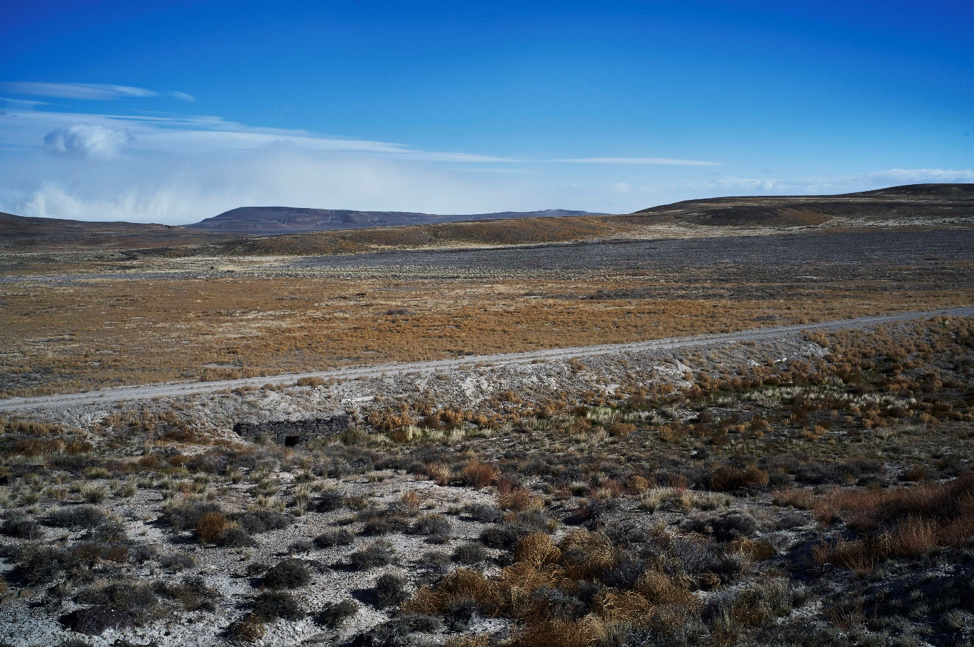
In Utah and Nevada, previous research has included Anan Raymond and Richard Fike’s survey of stations along the Promontory Branch, Adrienne Anderson’s documentation of domestic structures at Golden Spike National Historic Site in Utah, and recent work by Michael R. Polk.6 These projects document the construction camps of the late 1860s and the more permanent section stations completed to maintain and service the railroad in subsequent decades. Camps and section stations stretched hundreds of miles westward through Nevada and over the Sierra Nevada mountains into California.
It is estimated that the number of UPRR crew members working on the west slope of the Promontory Mountains in early April 1869 totaled 10,000, one-fourth of whom were track layers.7 These workers included many Civil War veterans, mostly Irish. The UPRR also hired German and English immigrants, Native Americans, and some 300 freed black slaves.8 The CPRR forces were equally large, consisting mostly of Chinese, but also Irish, Cornish, and, in Nevada, Paiute and Washoe. As crews streaked across Nevada in 1868, it is estimated that the CPRR employed 11,000 Chinese.9 While there is no specific estimate known for Chinese workers at and near Promontory Summit during early April 1869, it is almost certain that they provided by the bulk of the CPRR crew there (Figure 2).
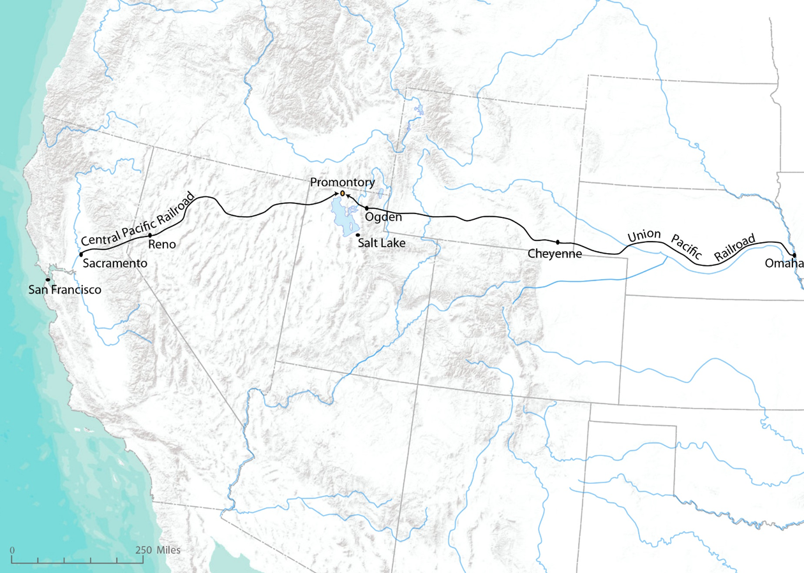
Jean Pfaelzer notes in her book Driven Out, concerning Chinese discrimination in the West during the late nineteenth and early twentieth centuries, that right after reaching Promontory Summit, all 11,000 of the Chinese working for the CPRR were unemployed.10 Some 1,400 of them headed west to Truckee, California, to find work in lumber mills and at other trades. Those Chinese laborers not retained by the CPRR and not finding employment in other industries likely found opportunities with the Virginia and Truckee Railroad, the Eureka and Palisades, the Utah Central, and many others throughout the United States and Canada. These railroads needed skilled, experienced, and willing workers. Newly discovered gold deposits in central and southern Idaho, as well as other parts of the West, provided employment opportunities for these unemployed workers. Other Chinese, no doubt, decided that they had had enough of railroad work. Perhaps some were homesick and felt that they had enough money to be able to return to China.
Census data for section stations in both Utah and Nevada for 1870 and 1880 make it clear that many Chinese workers on the CPRR were retained after initial construction. Charles Crocker, one of the CPRR’s four principal investors who supervised construction, had learned over time that Chinese workers were beneficial to the company, allowing construction to move rapidly, which added mileage that increased the CPRR’s acquisition of government land and grants through its contract with the federal government.11 The large number of Chinese workers meant that a pool of those who had become skilled at various crafts and had shown themselves to be ambitious would likely be valuable as workers in follow-up construction and long-term operation of the railroad.
To maintain a viable transportation corridor, the company needed to build additional infrastructure and carry out regular maintenance. The frenzy of construction on the transcontinental line brought additional problems later on. There was a need to rehabilitate and rebuild trestles and culverts, shore up the roadbed, and begin to construct passing tracks, turntables, pipelines, water tanks, shops, stations, and a myriad of other facilities. The railroads also needed to purchase and maintain tracks, roadbeds, locomotives, and rolling stock. Railroads, by their very nature, are maintenance-intensive industries. The initial construction would have been a herculean effort, but it would have been only the beginning of development. The greatest asset in undertaking this was labor, Chinese workers included.
Section Stations on the Central Pacific Railroad
By early May 1869, construction of the transcontinental railroad was at an end, but reconstruction and repairs lay ahead. In the haste to reach Promontory, shoddy workmanship occurred in the construction of many bridges, culverts, and miles of roadbed. Upgrades were needed from Utah all the way back through Nevada. On the route between Promontory and Ogden, Utah, however, there was almost certainly a pause in the work after a ceremonial golden spike was driven at Promontory Summit on May 10, 1869, since ownership along that portion of the line was in flux. A congressional law had fixed the point of intersection between the CPRR and UPRR on April 10 of that year, but Promontory was too remote from population centers to become a logical permanent railroad interchange.12
Negotiations began between the two railroad companies and continued for months before a final resolution of the matter was reached on November 10, 1869. The CPRR paid the UPRR a sum of $2,852,970 for a total of 48.5 miles of line from Promontory to a point five miles northwest of Ogden.13 The CPRR took possession of the line on December 1, 1869. Until that time the UPRR operated trains to Promontory, where they connected with the CPRR. After they took possession of the line in December, the CPRR apparently chose to use the UPRR grade from Blue Creek eastward toward Ogden, thus abandoning the CPRR’s originally constructed grade. This, however, required a significant rebuilding effort.
Much of the needed labor during the 1870s related to expanding the transcontinental railroad, but the existing line also needed to be put into operational condition after the hurry to complete the work during the late 1860s.14 Additionally, much labor was required in this effort in order for the UPRR to recover US Treasury bonds that the Pacific Railroad Act had authorized as partial payment for construction of the railroad.15
With the completion of the railroad and the need for maintenance, the periodic replacement of culverts and bridges, the expansion through the improvement of railroad technology, and the repair of locomotives, there was a distinct need for construction of dozens of stations along the grade along with necessary manpower and supplies. To meet this need, the CPRR established section stations every seven to eleven miles from Ogden to San Francisco, California, each housing between twelve and twenty men, to care for the track and associated facilities. The Chinese workers housed at these isolated stations served a critical function for decades beyond the more famous construction period.
Each section station, as they were generally called, was responsible for maintenance of a specific length of the line, and a regular crew was assigned to these section stations to take care of the work. Interspersed between these points were larger facilities responsible for locomotive repair and rebuilding, rolling stock refurbishment, and the myriad other tasks required to maintain even a small portion of the system. Early in the company’s history, these larger maintenance facilities included Ogden and Terrace, Utah and Carlin and Winnemucca, Nevada. Farther west, Sparks, Nevada was an important station, but that facility lay within an adjacent division of the railroad. It should be noted, however, that the size and territory of CPRR divisions fluctuated several times during the nineteenth and early twentieth centuries.
Census of Railroad Workers in Utah and Nevada
Federal and state census records provide a fine-grained glimpse into the demographic makeup of the railroad labor force during the last thirty years of the nineteenth century. Careful transcription of the federal census in Utah and Nevada has yielded a portrait of those who lived and worked in the vast barren reaches of these areas. Unfortunately, there is a marked disparity between the works of those enumerators collecting census data in the two states. What follows is the result of a page-by-page transcription of all railroad-related workers from the 1870, 1880, and 1900 federal censuses for Utah and Nevada (Table 1). Towards this end, the authors used the website Ancestry.com, which makes available the microfilm of the individual census pages from the National Archives collection. Data collection included name, age, sex, occupation, place of birth, and location/residence. While our research focused largely on the Chinese component of the labor force, care was taken to also collect details on the Caucasian section foremen who oversaw the large Chinese work gangs. It would have been preferable, and perhaps ideal, to include the 1890 census figures, but that information was famously lost due to a 1921 fire at the U.S. Commerce Department in Washington, D.C., and the subsequent lack of care in archiving the surviving documents. Finally, a cursory look at the 1910 census provided some additional contextual material regarding the demographic shift in the railroad workforce in Utah and Nevada.
| Station* | 1870 | 1880 | 1900 | |||
| Chinese | Foremen | Chinese | Foremen | Chinese | Foremen | |
| Bonneville | − | − | 13 | 2 | − | − |
| Willard City | 31 | 1 | − | − | − | − |
| Willard Precinct | 12 | 3 | − | − | − | − |
| Three Mile Creek | 19 | 1 | − | − | − | − |
| Corinne | 66 (33) | − | 12 (10) | − | − | − |
| Rawlins | − | − | − | − | 7 | 2 |
| Blue Creek | 58 | 4 | − | − | − | − |
| Little Mountain | 21 | 2 | − | − | − | − |
| Promontory | 26 | 3 | 10 (8) | 2 | 6 (5) | 2 |
| Rozel | 21 | 3 | − | − | − | − |
| Lake | 15 | 2 | − | − | − | − |
| Monument | 11 | 3 | − | − | − | − |
| Kelton | 27 (22) | 2 | − | − | − | − |
| Kelton Precinct | − | − | 53 (49) | 5 | − | − |
| Sections 135 and 136a | 15 | 2 | − | − | − | − |
| Snowville | − | − | − | − | 9 | 1 |
| Matlin | 13 | 2 | − | − | − | − |
| Terrace | 23 (16) | 3 | − | − | − | − |
| Terrace Precinct | − | − | 54 (39) | 2 | − | − |
| Bovine | 17 | 2 | − | − | − | − |
| Grouse Creek | − | − | 13 | 2 | 2 (0) | − |
| Lucin | 14 | 2 | − | − | − | − |
| Tecomab | 11 | 2 | 8 | 1 | − | − |
| TOTAL | 400 (355) | 37 | 155 (132) | 13 | 24 (21) | 5 |
*Stations are arranged east to west, starting with Bonneville Station, north of Ogden.
a The named identity of this section house is currently unknown, but its post office was Kelton, so it is assumed to be near that community (it is unknown whether east or west and how far).
b The 1880 census data for Tecoma, Utah, come from the Nevada census, Elko County.
Census records provide greater focus for understanding these isolated camps, including household sizes, ages, and gender, as well as how these changed over time in response to economic and legal forces. 16 The major legal force affecting the census data was the passage of the Chinese Exclusion Act in 1882, thirteen years after completion of the nation’s first transcontinental railroad line.17 From an examination of the work of Christopher W. Merritt and colleagues as well as Alton King Briggs, it is clear that the next two transcontinental railroads, the Northern Pacific and Southern Pacific, both used Chinese laborers extensively, even after passage of the Exclusion Act.18 The longevity of their employment past the initial construction phase is a facet that has not been well explored by archaeologists or historians. That is why the census data and patterns presented here are important to understanding the demographic shift of the railroad workforce in Utah and Nevada during the 1870−1900 period. Our examination of the 1910 censuses found no Chinese railroad workers enumerated in Utah and only limited numbers in Nevada, suggesting that the effects of the exclusion were finally felt.
Utah Census Analysis for Railroad Workers
There were 400 Chinese in Box Elder County, Utah, in the 1870 census, 155 in 1880, and 24 in 1900 (Table 1). Of those, the numbers employed by the railroad decreased from 355 in 1870, to 132 in 1880, to only 21 by 1900. The 400 Chinese represented in the 1870 census was the highest county count of Chinese in Utah during that year, indicating the significance of the railroad industry to this population. As mentioned earlier, there were no Chinese railroad workers in the 1910 census in Box Elder County.
From the census data it appears that the railroad, at least in 1870 and 1880, attempted to maintain a 10:1 ratio of Chinese to European-American foremen, with the numbers working out to 9.59:1 in 1870 and 10.15:1 in 1880. By 1900 the ratio had declined precipitously to 4.2:1. These proportions are calculated by the number of Chinese railroad laborers divided by the number of foremen across Box Elder County as individually enumerated in the individual census records. Regardless of the year, the predominant birthplace of the foremen from raw census enumerations in Box Elder County was Ireland, accounting for 45.9% in 1870, 84.6% in 1880, and 60% in 1900. Others came from England, Wales, Canada, Denmark, and eight different American states.
These European American section foremen oversaw hundreds of Chinese laborers in Box Elder County, most numerous of all Chinese populations in Utah during that period. Given the difficulty in assigning specific section camps to some of the enumerated Chinese workers, it appears that the ideal size of these camps was between 11 and 33 in 1870, with that range speaking to the amount of work being undertaken in that locale and the presence of a larger base community, such as Corinne, Terrace, or Kelton, Utah. This range is similar to that discussed in A. Dudley Gardner’s analysis of UPRR camps in rural Wyoming in the 1870s and 1880s, with his numbers showing “between three and thirty men and only rarely a woman.”19 The smaller rural section camps such as Matlin, Monument, Bovine, and Lake all had the lowest numbers of Chinese workers, but also the most desolate and isolated of living experiences (Figure 3). By contrast, Corinne had thirty-three Chinese railroad workers, although it is unclear whether they all lived in towns or nearby section camps.
Moving to the 1880 census, the number of workers by section camp varies more dramatically, with 8 at Promontory to 49 at Kelton Precinct. It is extremely likely that the forty-nine at Kelton Precinct reflects at least three separate section sidings, as indicated by the census enumerator separating them out into three different households, each preceded by a different section foreman. The same is likely true for the 39 at Terrace Precinct, where another three households appear. In the 1900 census, the numbers of Chinese are low, ranging from five to nine at the stations, with most railroad workers now appearing to be of Italian descent as defined within the pages of the census enumerations.
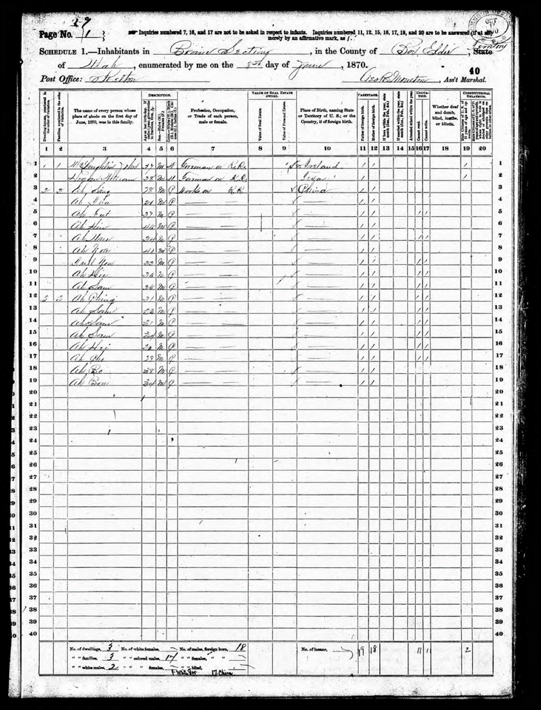
When looking at the demographics by decade, there are some interesting patterns that emerge. In the 1870 census, there are 355 Chinese railroad workers enumerated, averaging 28 years old, with a median age of26. The youngest of these workers was 12, with 6 of the 16 laborers at Terrace under the age of 15. The oldest was 64 (Figure 4). The number of Chinese workers in Utah dropped by 66% between 1870 and 1880, to just 132. These workers averaged 33 years old, with a median of thi34, ranging from 18 to 52. Finally, for the Utah part of the analysis, the 1900 census demonstrated the deleterious effects of changing legal, social, economic, and labor landscapes for the Chinese railroad workers, as their numbers dropped again by over 70% from 132 in 1880 to only 21. Following the generalized pattern, the average age of the Chinese railroad worker in Box Elder County rose again to 44, with a median age of 42. The men ranged in age from 23 to 61 and were split among the camps at Promontory, Snowville, and Rawlins. It appears that by 1900 the ethnic succession of the labor force of the CPRR transitioned to those born in Italy, now accounting for a majority of laborers in Box Elder County. The effects of nearly 20 years of Chinese exclusion were seen in the growing average age of those still working on the railroad in Box Elder County and in the complete lack of women in the population.
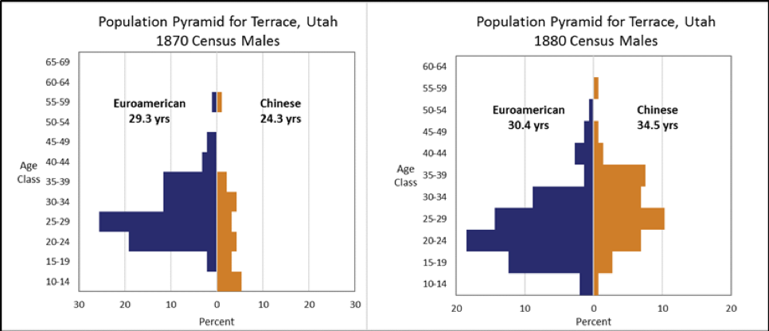
Nevada Census Analysis for Railroad Workers
In Nevada, the demographic story of the Chinese railroad workers is a bit murkier because of consistently problematic census data stemming from grouping multiple stations into one precinct and across multiple counties. Comparing these numbers to the analysis by Donald Storm, there should be fifty railroad stations in Nevada, but the census enumerators separated these into fourteen districts or precincts (Table 2) in nine counties of interest (Elko, Eureka, Lander, Humboldt, Pershing, Churchill, Lyon, Story, and Washoe Counties).20 Focusing on the 1870 federal census, the demographic patterns appear similar to those seen in Utah, with a total of 300 Chinese railroad workers identified in Nevada. Given the dramatically higher number of stations in Nevada than Utah, as well as the presumably high number of workers needed, it appears there are clearly some gaps in the numbers of Chinese identified by the Nevada census takers in 1870. From the pattern established in Utah in the 1870 census, the numbers of Chinese section workers appear to range between 11 and 33. If this is multiplied out in Nevada’s 50 stations, there should have been anywhere between 550 and 1,650 Chinese railroad workers in Nevada. Of course, these numbers are susceptible to any number of errors, from fewer workers needed for an individual station, to a single section crew covering several stations, to the use of non-Chinese for the maintenance work. In support of the last potentiality, Clark Station in Washoe County had 13 railroad laborers, but all were Irish or Swiss by birth, and the only Chinese worker was listed as a cook.
| Station* | 1870 | 1880 | 1900 | |||
| Chinese | Foremen | Chinese | Foremen | Chinese | Foremen | |
| Toano | − | − | 17 | 2 | 10 | 1 |
| Wells | − | − | 48 (36) | 2 | − | − |
| Ivans | 44 | 2b | − | − | − | − |
| Star Valley | 21 | 2b | − | − | − | − |
| Deeth | − | − | 4 | 1 | − | − |
| Halleck Station | − | − | 7 | 1 | − | − |
| Elkoa | 42 | 6b | 20 | 3 | − | − |
| Carlin | 14 | 0 | 37 (35) | 3b | − | − |
| Shoshone and Rock Creek | − | − | 6 | 1b | − | − |
| Beowawe | − | − | 7 | 1 | 11 | 2 |
| Humboldt River (Argenta) | − | − | 8 | 2 | − | − |
| Battle Mountain | − | − | 5 | 0 | 6 | 1 |
| Battle Mtn Station and Vicinity | 37 | 0 | − | − | − | − |
| Humboldt River (Piute) | − | − | 11 | 2 | − | − |
| Golconda | 7 | 1b | − | − | − | − |
| Golconda and Stone House | − | − | 12 | 0 | − | − |
| Central | 7 | 1b | − | − | − | − |
| Sierra | 15 | 2b | 13 | 3 | − | − |
| Winnemucca | 28 | 5 | 8 | 1 | 1 | 0 |
| Lake | 23 | 1b | 19 | 2 | − | − |
| Lassen | − | − | 9 | 1 | − | − |
| Humboldt | 13 | 2b | 6 | 1 | − | − |
| Humboldt Wells | 33 | 5b | − | − | − | − |
| Churchill County | 15 | 2b | − | − | − | − |
| Churchill | − | − | 24 | 2 | − | − |
| Churchill Canyon | − | − | 193 | 0 | − | − |
| Palmyra | − | − | 17 | 3b | − | − |
| Wadsworth | − | − | 18 | 0 | − | − |
| Wabuska | − | − | − | − | 4 | 1 |
| Clark Station | 1 | 1 | − | − | − | − |
| Carson River | − | − | 96 | 0 | − | − |
| Verdi | − | − | 10 | 0 | − | − |
| Truckee River Valley | − | − | 23 | 3b | − | − |
| TOTAL | 300 | 30 | 637 (629) | 36 | 32 | 5 |
*Stations are arranged east to west, starting with Toano just inside the Nevada/Utah border.
a Previously combined with an additional, but unnamed section station, therefore these numbers are aggregates.
b None of the Caucasian males here were listed as section foremen, although they all appear to be.
Like the Utah data presented earlier, a focus on the section foremen overseeing the Chinese railroad workers provides some interesting data. The 300 Chinese railroad workers were supervised by 30 European American foremen, according to the 1870 census, or a tidy 10:1 ratio, and 70% were Irish born. The demographic profile of the Chinese railroad workers in the 1870 Nevada census is similar to that of the Utah census. The average age was 28, median 27, with a range of 14 to 60 years old. These numbers are close to the pattern evidenced in Utah.
A far more likely number of Chinese railroad workers appears in the 1880 federal census data for Nevada, with 637 enumerated from the Truckee River Valley in the west to Tecoma in the east. The average age of a Chinese railroad worker rose to 31 from 28 in 1870, with a median of 30, yielding a slightly younger population than those working in Utah during the same period. Workers ranged in age from 15 to 62, with large Chinese communities along the railroad in Elko, Wells, Carlin, and Winnemucca servicing the worker population with stores, gardens, and socialization.
By 1900 the Chinese railroad worker population of Nevada dropped to only 32, close to the 21 enumerated in Utah. These 32 workers averaged 46.8 years old, or a median of 46, with the youngest and oldest at 25 and 61, respectively. Like Utah, the dwindling numbers of Chinese railroad workers in 1900 Nevada signal a major shift in the employment demographics of the railroads in the West. From a documented high of 629 in 1880, the 32 workers identified in 1900 are clustered in only a few small remote stations at Winnemucca, Battle Mountain, Toano, Beowawe, and Wabuska. However, there now were dozens of Japanese and Italian railroad workers appearing in Elko, Halleck Station, Wells, Carlin, and Winnemucca, where there were three Irish foremen for 15n Italians and 35 Japanese workers.
Census Comparison between Nevada and Utah
Overall patterns emerge from the census analysis of Nevada and Utah that help us understand the demographics and working conditions of Chinese railroad workers during the last thirty years of the nineteenth century. First, it does appear that the CPRR attempted, but did not always succeed, in maintaining a 10:1 ratio of Chinese laborers to foremen throughout this period. The ratio in Utah ranged from 9.59:1 in 1870 to 4:1 by 1900, while Nevada’s camps went from 10:1 to 6.4 in that same period. Irish-born foremen dominated the demographics in these three census years, with a minor proportion from other European countries, Canada, or other American states.
Second, the number of Chinese workers at individual section stations appears to have ranged from 11 to 28 in 1870, 10 to 24 in 1880, and down to four to eleven by 1900. Estimated section hand figures in 1900 are flawed, as the numbers of Italian and Japanese workers dramatically increased, although they were still often overseen by Irish foremen. The introduction of Japanese workers as a replacement for Chinese workers is similar to the pattern noted by A. Dudley Gardner and David E. Johnson in Wyoming, although there were more Italians in Utah and Nevada than seen in Wyoming.21 Gardner and Johnson point out that by 1870 the predominant ethnicity in the UPRR camps in Wyoming was Chinese, but these workers virtually disappeared by the 1900 census and were replaced by Japanese. The effects of anti-Chinese legislation, and thus hiring decisions, are seen in the overall historical population abstracts, where the number of Chinese-born residents in the United States dropped from 106,701 in 1890 to 81,584 in 1900. Conversely the numbers of Japanese immigrants increased sevenfold in the same period, from 2,292 in 1890 to 24,788 in 1900.22 A similar pattern of ethnic labor succession is seen throughout the American West in regard to the Chinese population.23
Third, the average age of Chinese workers nearly doubled between 1870 and 1900, with the records indicating a rise from 27 to 47 in Nevada and from 28 to 42 in Utah. This pattern mimics Chinese age patterns elsewhere in the rural West and is the suggestive effect of anti-immigration legislation and persecution.24 Erika Lee notes that the majority of Chinese immigrants to the United States during the Exclusion era were actually still able-bodied men in their twenties and thirties.25 But the growing age of those employed by the railroad during that same period suggests that perhaps these new immigrants were excluded from railroad employment or kept to more urbanized locales.
A major gap in the records is the 1890 census, but by looking at the surviving abstract book, it appears that while Nevada’s Chinese population nearly dropped in half from 5,416 in 1880 to 2,833 in 1890, Utah’s population went the opposite way, growing from 501 in 1880 to 806 in 1890.26 How many of these Chinese residents were engaged in railroad labor in Box Elder County is unknown, but there could have been a major growth in their numbers during that period before their near disappearance by 1900. Seemingly supporting this idea is an anecdotal reference in an 1894 article in the Brigham City (UT) Bugler to a “China Town” in Terrace with a population of at least 150 people, although there were only 54 in 1880 and none documented in 1900.27
A personal glimpse into the lives of individual Chinese railroad workers is found in the pages of the Southern Pacific Bulletin, a railroad-generated informational newsletter that first began publication in 1913.28 By the 1910s many of the workers would have been in their fifties and sixties, and maintenance on the railroad is difficult manual labor. An article in the Southern Pacific Bulletin in 1922 highlighted the career of Ah Hop, who retired from the railroad at Montello, Nevada, on December 31, 1920, after 49 years, 6 months of service (Figure 5).29 At the time Ah Hop was the oldest and longest tenured of the Chinese men on the pensioners’ list, which included five others: Wo Wa (25 years of service), Ah Lake (37 years of service), Yuet You (47 years of service), Chin Lung (27 years of service), and Ah Han (43 years of service), with Wo Wa and Ah Lake indicated as having returned to China.30
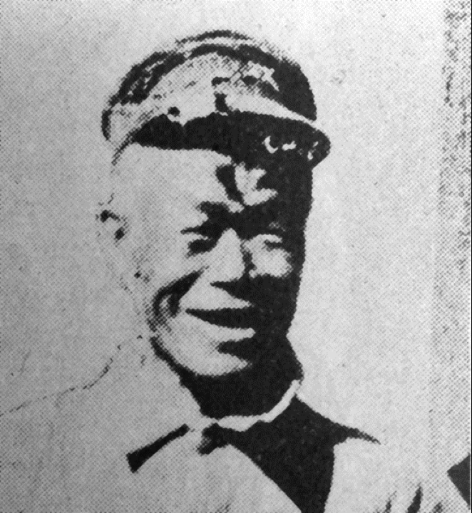
Further research is necessary to differentiate the section camps that are lumped together in both the Nevada and Utah censuses. This might be accomplished by cross-checking the railroad personnel records against the census of enumerated European American foremen, but this is time consuming and would likely result in a low level of returns. Additionally, railroad personnel records for this period are sparse owing to the destruction of most CPRR records at the headquarters building in San Francisco during the 1906 earthquake and fire.
CPRR Section Station Schematics and Analysis
With a firm foundation of who lived at these isolated section stations in Nevada and Utah, the historical record can provide some perspective on the organization, design, and construction of these camps. As noted in several earlier papers on this subject,31 important information in this research comes from a ca. 1880 manuscript entitled Central Pacific, Salt Lake Division, 1880, which includes drawings of stations, related buildings, and track, in addition to actual construction drawings at selected stations along the CPRR’s Salt Lake Division between Wadsworth, Nevada and Ogden, Utah.32 Of the sixty-one railroad stations along the Salt Lake Division for which drawings of buildings are shown, fifty (82%) identify crew facility buildings labeled “China House,” “China Bunkhouse,” and “China Cookhouse.” Certainly most, if not all, of the Chinese workers were hires from the CPRR construction work in the late 1860s, as evidenced by information in the 1870 and 1880 federal census records discussed earlier (Tables 3 and 4). The consistency of sizes and configurations of these buildings and the materials shown indicate that the railroad supplied these structures, perhaps even built them elsewhere and brought them to each location on flatbed rail cars (Figure 6). Archaeological evidence obtained during recent recording of the Matlin Section Station in Utah indicated that the Chinese bunkhouse appears to have been placed on wooden piles for foundational support (Figure 7). Using such a foundation would have meant the floor of the structure had rested several feet above the ground and would have easily accommodated a prefabricated or built-on-site structure.
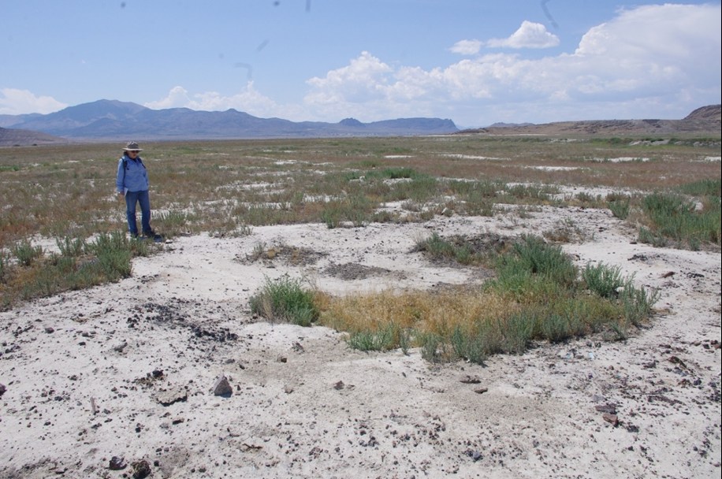
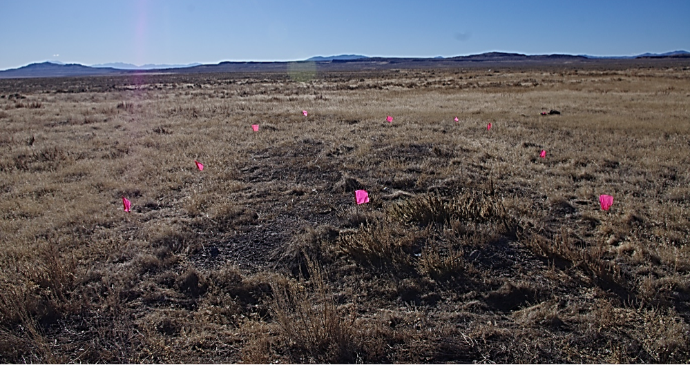
| Station Name | Distance from SFa | Plan Ref. | Building Name | Size (ft.) | Sq. ft. | Windows | Comments |
| Bonneville | 873 | C | China House | 16 × 24 | 384 | 0 | |
| Quarry | 851 | D | China Bunkhouse | 14 × 20 | 280 | 2 | |
| E | China Cookhouse | 12 × 14 | 168 | 2 | |||
| Blue Creek Station | 839 | F | China Bunkhouse | 14 × 22 | 308 | 3 | Abandoned station; E and F reversed (wrong); corrected for statistical purposes here |
| E | China Cookhouse | 12 × 14 | 168 | 2 | |||
| Promontory | 830 | G | China Bunkhouse | 16 × 22 | 352 | 3 | |
| H | China Cookhouse | 12 × 14 | 168 | 2 | |||
| Rozell | 822 | C | China Bunkhouse | 14 × 20 | 280 | 0 | |
| Lake | 813 | B | China Bunkhouse | 16 × 24 | 384 | 0 | |
| Seco | 798 | C | China Bunkhouse | 16 × 22 | 352 | 2 | |
| D | China Cookhouse | 12 × 14 | 168 | 2 | |||
| Kelton | 791 | C | China House | 16 × 30 | 704 | 2 | Sold; attached room 14 × 16 feet |
| Ombey | 780 | C | China Bunkhouse | 16 × 24 | 384 | 0 | |
| Matlin | 770 | C | China Bunkhouse | 16 × 24 | 384 | 0 | |
| Terrace | 759 | E | China Bunkhouse | 16 × 22 | 352 | 2 | |
| D | China Cookhouse | 12 × 14 | 168 | 2 | |||
| Bovine | 749 | D | China Bunkhouse | 16 × 22 | 352 | 3 | |
| E | China Cookhouse | 12 × 14 | 168 | 2 | |||
| Lucin | 738 | C | China Bunkhouse | 18 × 20 | 360 | 2 | |
| D | China Cookhouse | 12 × 14 | 168 | 2 | |||
| Tecoma | C | China Bunkhouse | 16 × 24 | 384 | 0 |
* All data from Arthur Haig, “Central Pacific Railroad, Nevada and Utah Station Plan Book, ca. 1880s,” MS 79, Central Pacific Railroad Collection RG 3 Land Department Records, California State Railroad Museum Library, Sacramento Ms. 24, California State Railroad Museum Library, Sacramento, 1983, except distance from San Francisco (SF).
a Distance from San Francisco, Fourth Street via Niles Canyon, prior to 1903 from Lynn D. Farrar, “Listing of Overland Stations and Mileage, Central Pacific Railroad, Southern Pacific Railroad, 1866−1996: 2. Reno to Ogden via Promontory 1866 through 1903,” n.d., Central Pacific Railroad Photographic History Museum website, accessed March 20, 2016, http://cprr.org/Museum/CPRR_MP2_RENO_OGDEN-A.pdf.
Table 4. Central Pacific Railroad Section Stations with Known Chinese Occupation, Nevada*[/su_note]
| Station Name | Distance |
from SF a
Pequop
Cosgrove
* All data from Arthur Haig, “Central Pacific Railroad, Nevada and Utah Station Plan Book, ca. 1880s,” MS 79, Central Pacific Railroad Collection RG 3 Land Department Records, California State Railroad Museum Library, Sacramento, 1983, except distance from San Francisco (SF).
a Distance from San Francisco, Fourth Street via Niles Canyon prior to 1903 from Lynn D. Farrar, “Listing of Overland Stations and Mileage, Central Pacific Railroad, Southern Pacific Railroad, 1866−1996: 2. Reno to Ogden via Promontory 1866 through 1903,” n.d., Central Pacific Railroad Photographic History Museum website, accessed March 20, 2016, http://cprr.org/Museum/CPRR_MP2_RENO_OGDEN-A.pdf.
The bunkhouses and cookhouses identified in the Haig book as used by Chinese are generally found at a distance from the section station house. They are always single-story, wooden gabled structures (Figures 8, 9, 10). Forty percent (20) of the bunkhouses measured 16 by 24 feet in size, and most had at least two windows and one door. Many other bunkhouse sizes were also present, including 18 by 20, 18 by 22, 12 by 16, and 16 by 22 feet (Figure 11). Interestingly, cookhouses were far more consistent in size. Similar to the bunkhouses, all were one-story, wooden gabled structures. There were 28 cookhouses scattered among all of the section stations in Nevada and Utah. Where they occurred, they were always paired with a Chinese bunkhouse and were located within 30 feet of the bunkhouse, usually 24 to 25 feet distant. Twenty-seven of them measured 12 by 14 feet in size. Only one was slightly different, measuring 12 by 16 feet.
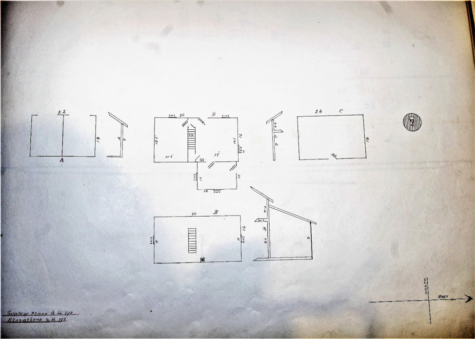
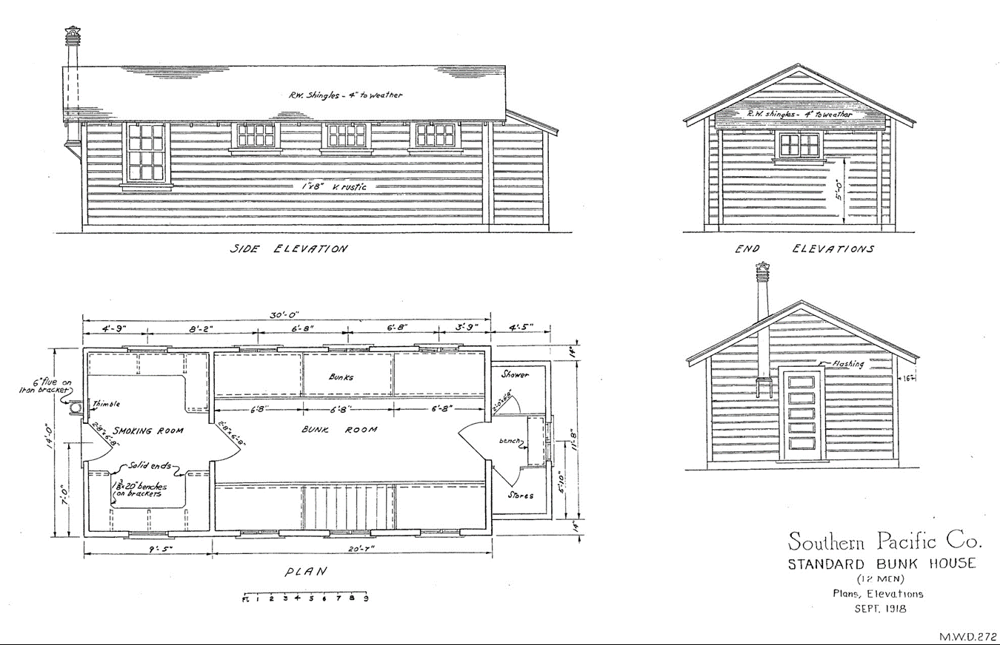
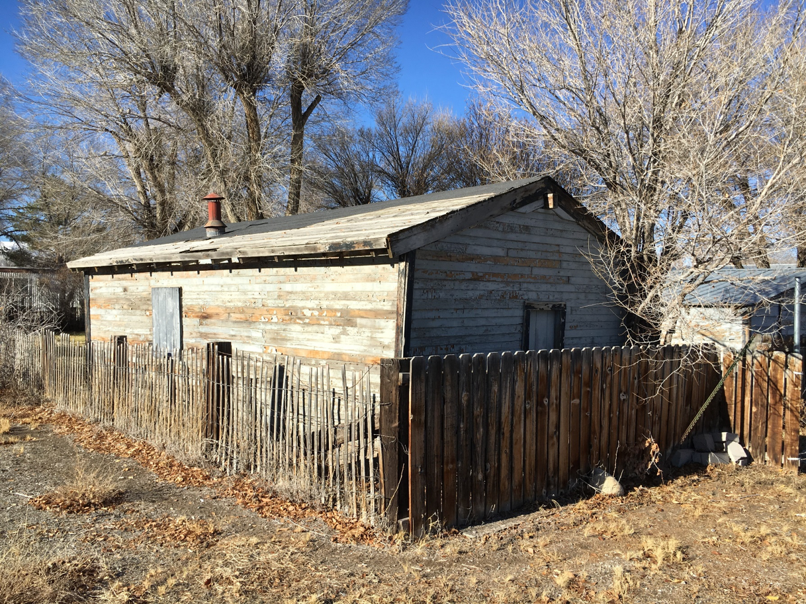
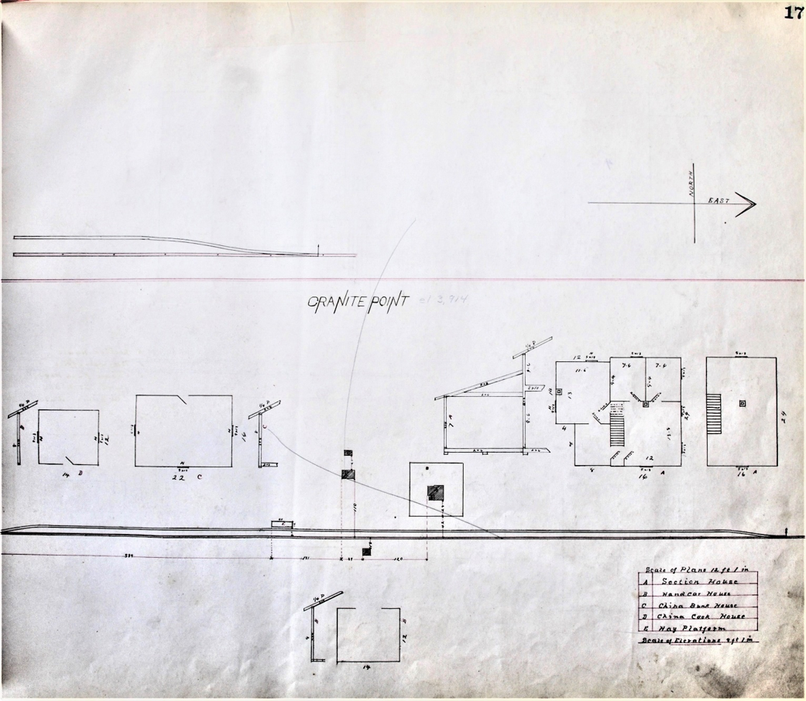
Applying the numbers of Chinese workers from the census records to the square footage from Haig’s station drawings can offer some indication of living conditions. There seems to be a high degree of variation of square footage per person between different section stations, and over time. For instance, at Beowawe, Nevada, Chinese workers had 34.9 square feet per person in 1880 and 54.9 square feet in 1900; at Toano Station, Nevada, workers had 28.3 square feet in 1880 and 48.1 square feet in 1900. One of the worst ratios seen in the data is from Rozell Station, Utah, where in 1880 Chinese workers had only 13.3 square feet (twenty-one laborers in 280 square feet) of living space per person. This could indicate that there were additional living quarters available, such as old box cars, or the Chinese supplemented the bunkhouse with dugouts and tents, similar to what was done during the construction period.
Archaeology of Chinese Workers at Section Camps
One of the challenges posed by historical research of railroad topics is the fact that the records kept by the railroad companies were not created for the types of questions often asked by historians. There are many gaps in the information, particularly for the CPRR since documentation for the period before 1906 is limited. This is where archaeology may assist in bridging many knowledge gaps and even provide answers to questions not possible by document research, particularly about aspects of life not normally discussed in documents or even in oral histories.33 Recent fieldwork by Michael Polk and Ann Polk of Aspen Ridge Consultants, along with a study funded by the National Park Service by Utah State University Archeological Services (USUAS) under the direction of Kenneth Cannon, has sought to identify, record, and analyze the physical remains of these section camps and towns in Utah and Nevada (Table 5).34
| Section Station Name | Site No. | RR Co. Milepost* | Dates of Operation* | Chinese Buildingsa | Structural Featuresb | Artifactsc |
| Monell, Wyoming | 48SW3986 | UPRR 1120 | 1889−1910? | Unknown | Unknown | 17 rice bowl fragments Double Happiness and Bamboo motifs |
| Hampton, Wyoming | 48UT1520 | UPRR 1018 | 1868-1903 | Unknown | Dugout | 8 porcelain tableware bowl fragments with Bamboo and hand-painted floral motifs; celadon tableware |
| Aspen, Wyoming (excavated site) | 48UT660 | UPRR 977 | 1868−early 1900s | 2 or 3 permanent wooden buildings | Tent pads | 62 fragments of porcelain tableware with Double Happiness, Bamboo, and Four Seasons motifs; celadon ware; fragments of stoneware utility ware |
| Quarry, Utah |
(name changed to Balfour in 1888)
(excavated site – station was abandoned in 1903)
(excavated site)
(name changed to Toy in 1910)
CH = China House, CBH = Chinese Bunkhouse, CCH = Chinese Cookhouse, CPRR = Central Pacific Railroad, RR Co. = Railroad Company, UPRR = Union Pacific Railroad
* The Utah station dates are taken from Don Strack , http://utahrails.net/sp/sp-promontory.php , accessed April 20, 2016; and issues from 1882-1941 of Southern Pacific Company, “List of Officers, Agencies, Stations, Etc.”, Issued Annually by Accounting Department, San Francisco, California; all Utah and Nevada station milepost points are taken from Lynn D. Farrar, “Listing of Overland Stations and Mileage, Central Pacific Railroad, Southern Pacific Railroad, 1866−1996: 2. Reno to Ogden via Promontory 1866 through 1903,” n.d., Central Pacific Railroad Photographic History Museum website, accessed March 20, 2016, http://cprr.org/Museum/CPRR_MP2_RENO_OGDEN-A.pdf. Wyoming stations are approximate mileage from San Francisco, lacking specific milepost information from UPRR’s headquarters in Omaha.
a The buildings are noted at stations on Salt Lake Division in Arthur Haig, “Central Pacific Railroad, Nevada and Utah Station Plan Book, ca. 1880s,” Ms. 79, Central Pacific Railroad Collection RG3 Land Department Records, California State Railroad Museum Library, Sacramento, 1983.
b The only features identified as Chinese during archaeological recordation or excavation.
c The only artifacts identified as Chinese in origin.
The section stations and the larger town site of Terrace, Utah, included in this discussion have remnants of railroad and domestic activities that took place during the late nineteenth and early twentieth centuries (Figure 12). None of the sites were actively occupied beyond the early 1940s; most were abandoned prior to that time, as maintenance and other activities could be carried out from larger railroad centers farther away or, as was the case with Hampton, Wyoming, where the railroad moved, and at the sites along the Promontory route of the CPRR, where the railroad was abandoned.
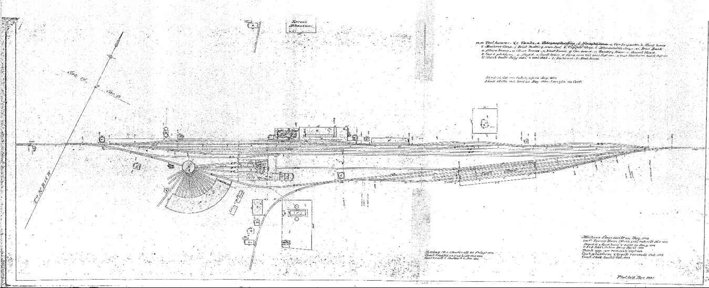
At all the sites, elements of the original station remain, including section houses, concrete platforms, blacksmithing activity areas, various building foundations, and trash dumps (Figure 13). In all the sites there are features and artifact concentrations left from Chinese railroad worker occupation as well. Sometimes these remnants are faint, in the form of a few dozen easily identifiable porcelain sherds, opium tin fragments, or other ethnically diagnostic artifacts (Figure 14). Sometimes more substantial evidence is present, such as at Matlin Section Station, Utah, where the Chinese bunkhouse feature was found, consisting of an oblong, slightly mounded area with considerable decaying fragments of wooden peeled post fragments along what was once the north wall of the structure (Figure 15). Sadly, there are few sites untouched by the vagaries of looting and bottle hunting that through personal greed can easily rip pages out of the history books by taking artifacts out of context.
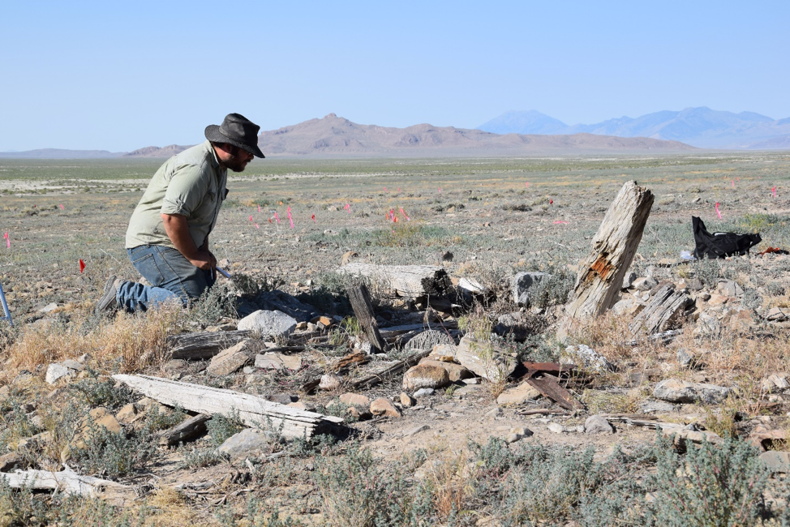
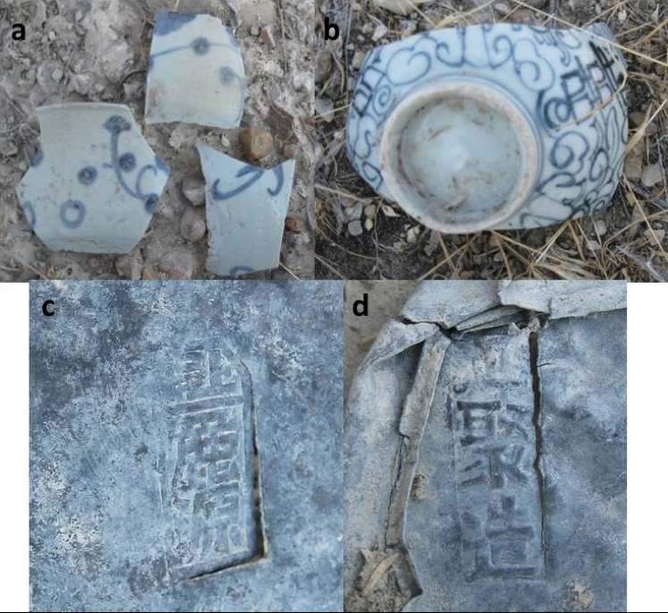
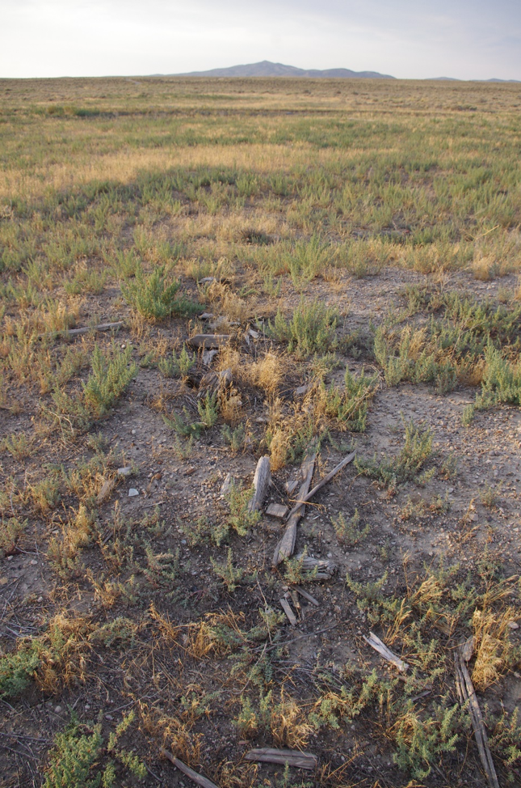
Perhaps the most interesting aspect of the sites are the plan layouts and configuration of features. As shown in the plan drawings for most of these stations, the Chinese bunk houses and cookhouses are always segregated, well away from the section house, which is where the foremen (usually two American or Euro-American men) for the station lived and office work was carried out. In some cases the Chinese occupation areas are more than 500 feet distant and often across the railroad tracks (Figure 16). This configuration was archaeologically confirmed repeatedly during surveys of the sites., There were few locations where this would have been due to topographic variability or lack of suitable land on which to build. There was an obvious interest in keeping distance between the white foremen and the Chinese laborers.
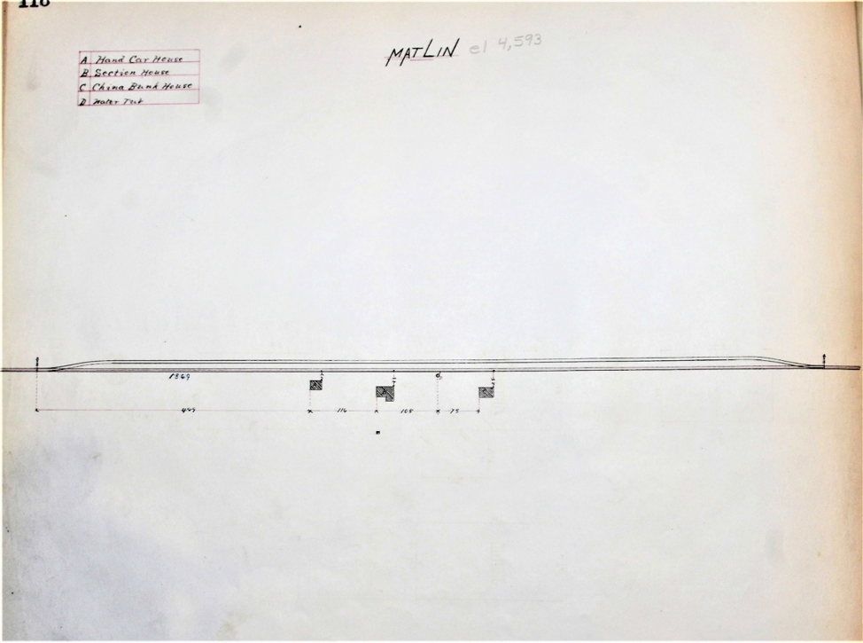
Archaeological Research
To supplement the historical record, USUAS completed detailed documentation of two section stations and the town site of Terrace, along the route of the original transcontinental railroad in Box Elder County.35 The two stations, Ombey and Bovine, and the town site of Terrace are now on lands managed and administered by the Salt Lake Field Office of the Bureau of Land Management. For the two section stations, archaeologists carefully identified, counted, and mapped the location of all features (foundations, trash dumps, and other features) and those artifacts generally identified as ethnically Chinese (Figure 17). Terrace, however, is a much larger site spread over several hundred acres. As such, archaeologists focused on documenting those portions of the site near the previously identified Chinatown. When in their original context, artifacts can provide a wealth of information on the site’s ethnic makeup, spatial organization of housing and people, wealth and status, and a host of other important topics. In this case, the artifacts can provide a snapshot of the daily activities of Chinese railroad workers in the last few decades of the 1800s through about 1920. Combine this with the section station drawings found in Central Pacific, Salt Lake Division, 1880, and there is a great opportunity to understand the life of those in these areas in rural Nevada and Utah.
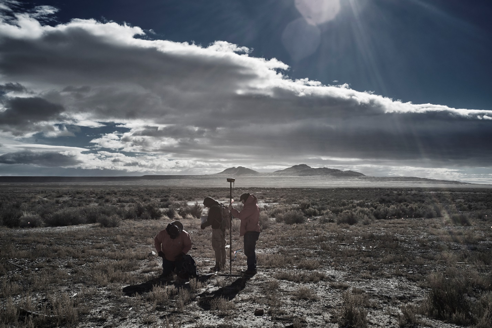
Bovine Station
CPRR construction crews reached Bovine (691.6 miles from San Francisco) on March 28, 1869, and soon established a section house. In 1869, Bovine contained a section house, train car body (used for temporary housing or an office), Chinese bunk- and cookhouses, a water tank, and siding (Figure 18). Later, in 1885, section crews built a freight platform and replaced some of the Chinese bunkhouses. Bovine served as a section station after the Lucin Cutoff (ca. 1904) but appears to have been bypassed by the late 1930s.36
USUAS identified a total of forty-seven features in Bovine, including a railroad bridge and five culverts, twenty-four depressions/pits, one possible firepit, two possible looter’s pits, two U-shaped rock alignments (one a possible hearth),37 two small pit features, three brick and slag concentrations, an arrangement of posts, a brick path, and the probable remains of five structures: China House, section house, outhouse, car house, and water tank (Figure 19).
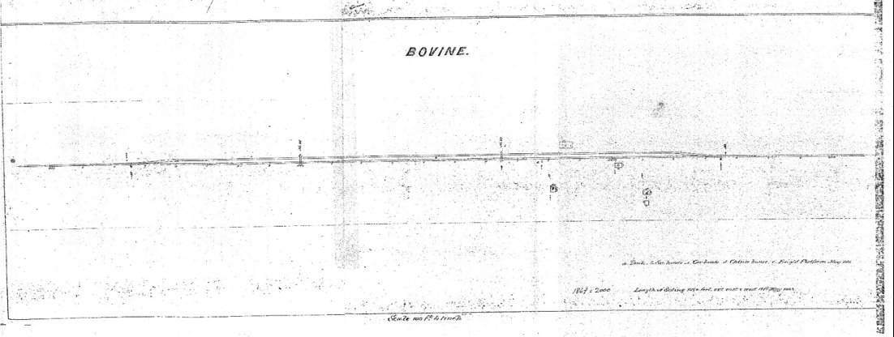
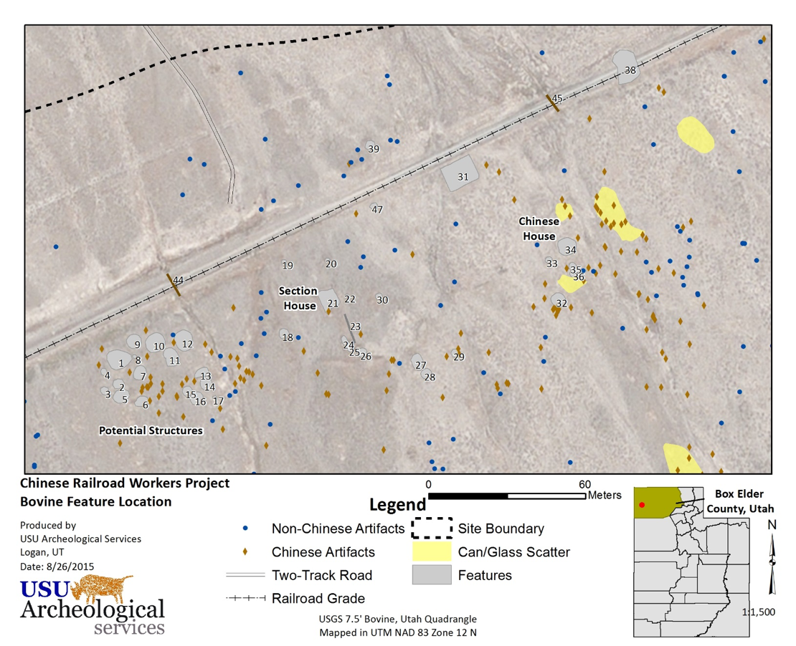
The 1870 census recorded two Caucasian foremen and seventeen Chinese section hands were in residence. The average age of the Chinese workers was 29.3 years. This early census provides an important snapshot of this particular section station within a year of its initial establishment. The census data are a bit ambiguous, but they indicate the Chinese workers were dwelling in two buildings at the time, suggesting that workers may have abandoned the temporary tent structures represented by the depressions on the western portion of the station (see Figure 16). The spatial distribution of the ceramics is discussed below.
Ombey Station
Ombey is an abandoned railroad section station along the transcontinental railroad in Box Elder County, Utah (Figure 20). By 1878, Ombey replaced a siding and section station called Gravel Pit located about one track mile to the east. Railroad section maps dated 1881 depict a section house, toolhouse, and Chinese bunk- and cookhouses at Ombey. In 1900, a wye was constructed to turn the new, heavier locomotives, and Ombey started to provide freight service for regional sheepherders. Ombey served as a section station even after completion of the Lucin Cutoff (ca. 1904) and continued to appear on Southern Pacific documents as a Class A Station for shipment of freight until July 1942.38
USUAS identified a total of eighteen features within Ombey, including three culverts, two brick concentrations, two potential water catchment features, and ten depressions (including the foundation of the China House and cookhouse). Outlines of 21 artifact concentrations were mapped (Figure 21).
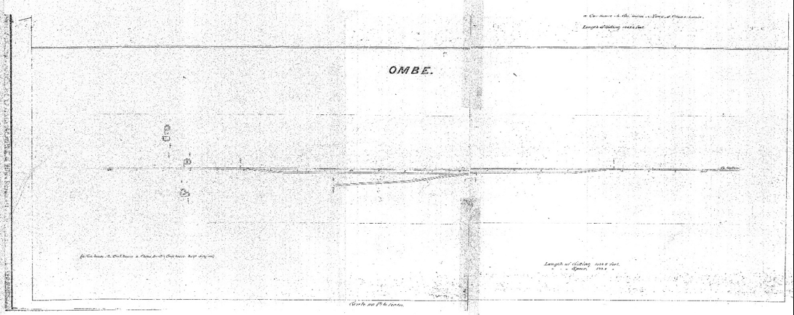
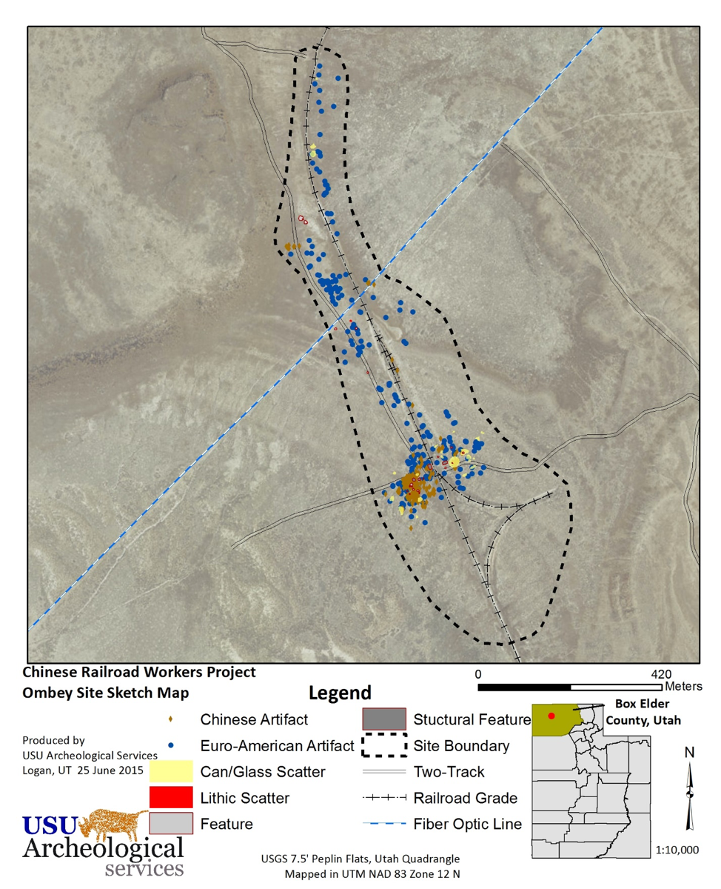
As expected, the surface of Ombey contains thousands of artifacts, including numerous cans, ceramics, bottles, railroad hardware, and domestic items. Chinese artifacts are scattered across the site but also appear concentrated near the China House and nearby depression features. Chinese overseas material culture includes semi-porcelain ware (Bamboo Double Happiness patterns), brown-glazed stoneware (widemouthed jars, large storage jars, liquor bottles, and spouted jars), Winter Greenreen (celadon), opium tins, an opium lamp, and other artifact types.
Artifact Analysis and Spatial Analysis
At Ombey and Bovine, most of those artifacts easily described as Chinese-related are brown-glazed stoneware, which is related to food storage (Figure 22). These artifacts include liquor bottles, spouted jars, wide-mouthed food jars, and miscellaneous nondiagnostic fragments. Tableware, such as plates, bowls, saucers, and spoons, accounted for the remaining portions of the Chinese ceramic assemblage at these sites. At Ombey, a variety of tableware was found, including the most expensive patterns, Winter Green and Four Season Flower, with lesser amounts of cheaper versions (Bamboo and Double Happiness). At Bovine tableware was dominated by Bamboo-style ware, with only a small number of fragmentary pieces of the most expensive ceramics. This is an interesting pattern and suggests that the workers at Ombey had access to a greater variety of ceramics or possessed greater spending power (Figure 23).
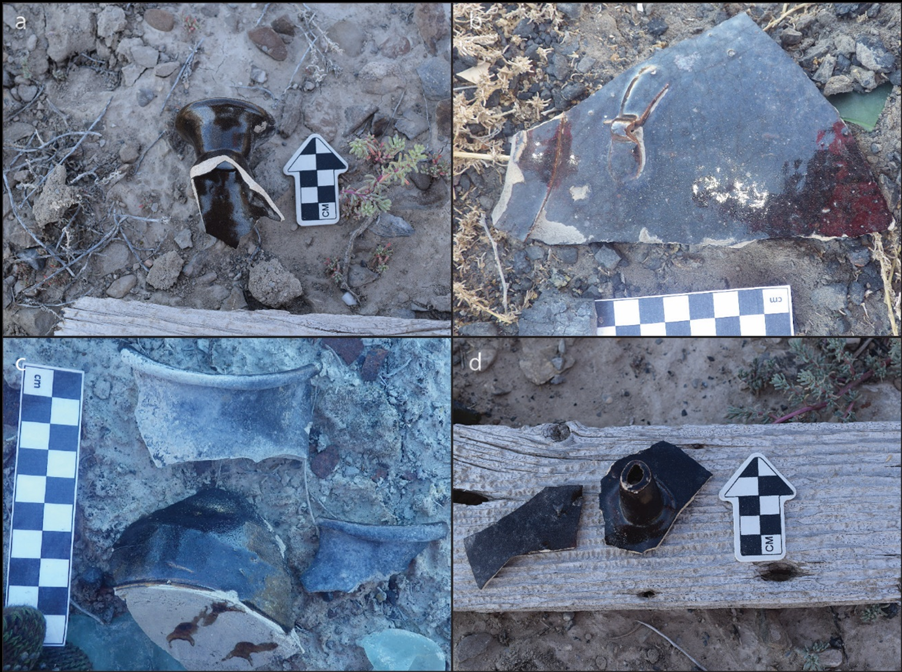
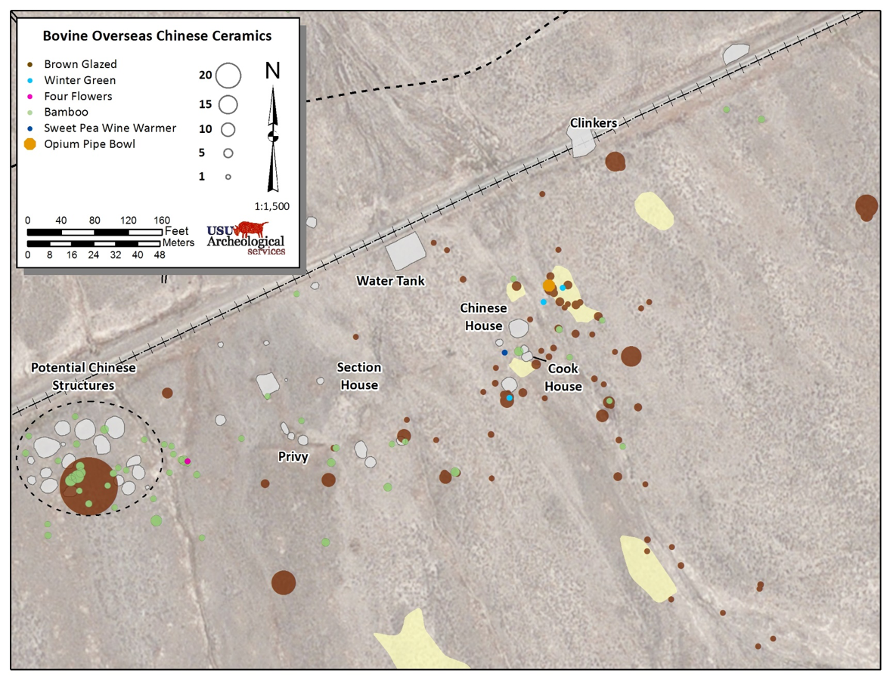
Terrace
Established as early as 1869, the town of Terrace grew to be the largest railroad-based community west of Corinne between 1870 and 1890. Terrace boasted a roundhouse, turntable, machine shops, railroad offices, a robust main street of commercial business, two hotels, a large wooden-frame depot, and the third largest Chinatown in Utah according to the 1870 census records. Terrace was largely abandoned by 1900 by the Southern Pacific Railroad, as the company moved most of the railroad operations to Montello, Nevada in preparation for the construction of the Lucin Cut-off in 1904. At Terrace, the pattern of ceramic types continues to be informative and might even be able to provide an indicator of the location of homes used by Chinese workers versus those Chinese merchants or foremen with higher earning power (Figure 24).
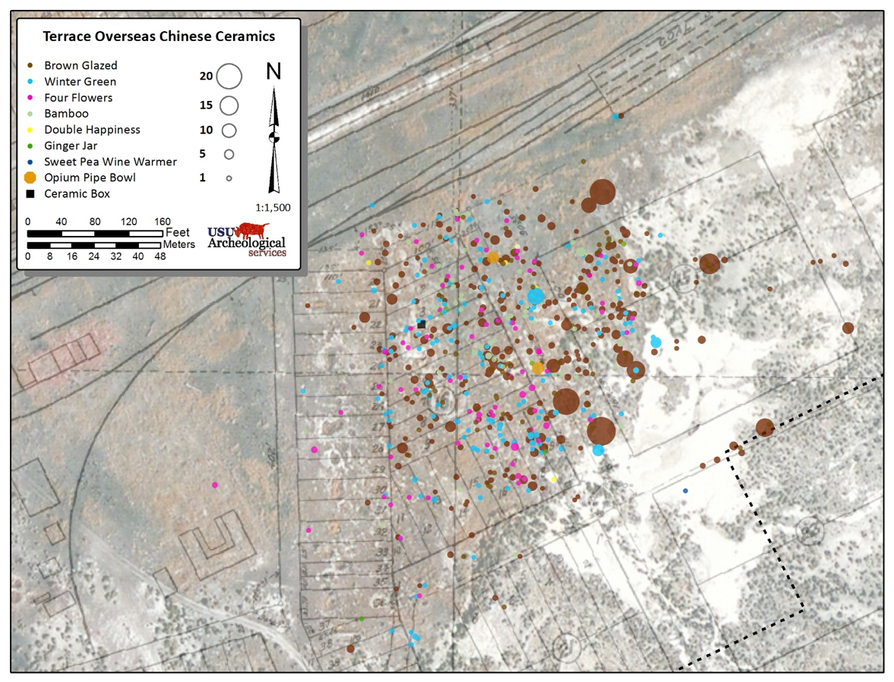
The ceramic assemblage at Terrace included much higher frequencies of expensive tableware (Winter Green and Four Seasons patterns), which accounts for 80% of the assemblage. Compare this to the lower cost Bamboo and Double Happiness styles, which represent the remaining 19.5% of the assemblage. Terrace greatly differs from the other sites, as the relative dominance of expensive ceramics was approached only by the Ombey assemblage, where the same types represent only 42.4% of the assemblage. Within the expensive ceramics, a high number of vessel styles was also present.
Chinese residents of Terrace included not only railroad workers but also local business owners and employees:
Most of the men were railroad employees, but others were independent businessmen. One man named Hong Lee “kept a store,” another, Wah Hing, ran a laundry. Ching Moon was a grocer. … One Wong Tz Chong performed the handiwork of a tailor, and another, Ah Lei, raised vegetables in his own garden. There were two Chinese laundries in Terrace, because Wa Hop was a laundry proprietor also.39
As illustrated in Figure 24, most of the Chinese-affiliated artifact assemblage at Terrace is south of the grade. While Bamboo ceramics were present across the site, they appear to dominate the assemblage to a greater extent to the west, which may be related to the presence of the dugouts that are numerous in that area. It is possible that the numerous dugouts in conjunction with the Bamboo ceramics are an indicator of an initial construction-period camp that was abandoned when the section station became more permanent with standing structures and bunkhouses.
Tableware at Ombey was primarily concentrated along the west side of the railroad grade, while food storage vessels were less constrained in distribution (Figure 25). A small concentration to the north of the area includes an opium tin and Bamboo and Double Happiness ceramic sherds that may represent Chinese laborers looking for a little solitude.
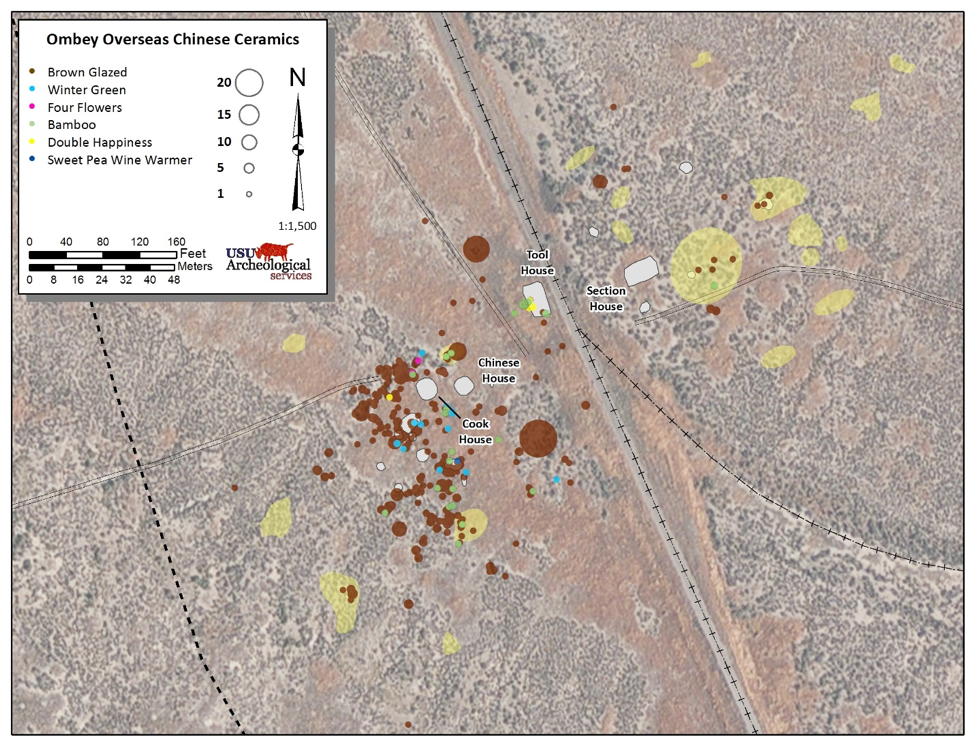
When comparing the frequency of styles and types of ceramic vessels between the sites above, it is clear that these sites provided different types of assemblages (Figure 26). While there are some patterns that may be related to temporal periods of occupation, clear patterns are present that likely reflect the occupations and relative economic status of residents. Other patterns suggest access to certain types of goods, or the site’s role as a possible distribution center for the surrounding railroad communities may have led to a richer assemblage in terms of the number of vessel styles and the presence of specific artifacts that were proven uncommon at other sites based on the investigation conducted along the Box Elder portion of the CPRR grade.
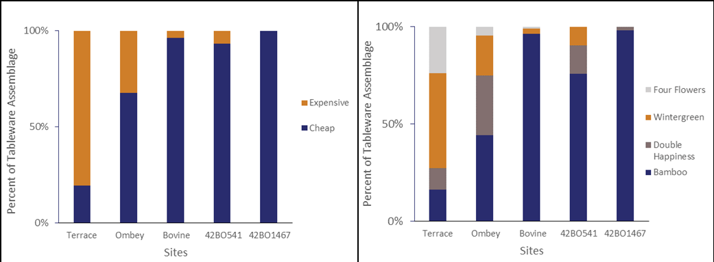
Chinese Workers at Utah and Nevada Railroad Maintenance Camps
It is clear that enough documentary and archaeological evidence exists to further explore the nature of Chinese and European American occupation and work relations at CPRR section stations in Utah and Nevada. Despite the sometime disparate data sets being gathered for this purpose, in time there will be enough to examine and analyze properly important economic and social elements of the work groups and their relationships despite the short timeframe within which this interaction occurred. Nevertheless, enough information has been gathered over the last several years of research that we can begin to describe several important ideas relevant to the experience of Chinese and other peoples in the railroad industry in western North America.
Both documentary and archaeological data show that Chinese workers, who were so important in the construction phase of the CPRR, continued on as valuable employees in the postconstruction era of both reconstruction of portions of the line and the longer-term maintenance activities vital to the operation of a railroad. According to census documentation, 80% to 90% of the workers present at most of the CPRR stations in Nevada and Utah from 1870 to at least the mid-1880s were ethnic Chinese, almost certainly continuing on from construction activities during the 1860s.
As we dug further into the census information, as well as the available documents and the archaeology of these sites, it became clear that a most important aspect of the Chinese experience was the strong ethnic, social, and hierarchical division within each section station. European American foremen lived and worked in and around section houses, and it is assumed that Chinese laborers lived in and around their bunkhouse and, when present, their cookhouse. Presumably, there was intermixing during work hours on common tasks, but that division was clearly understood and adhered to by both parties. This division is also evidenced in the archaeological record at these sites, most dramatically at Ombey, where the railroad grade provides both a physical and, presumably, symbolic separation of the Chinese laborers to the west and the European American foremen to the east (see Figure 25).
By the 1880s, dissatisfaction with low-wage Chinese laborers in many parts of this country, coupled with generalized anti-immigration agitation by powerful labor unions in the American West, led to passage of the Chinese Exclusion Act in 1882, closing off the flow of potential new workers from China for the railroad.40 The effects of this act and, no doubt, a variety of other factors led to declining numbers of Chinese workers on the CPRR and elsewhere in the country (Figure 27). On the CPRR this eventually led to the replacement of Chinese by other more recent immigrants, predominantly Italians, Bulgarians, and Japanese. The 1910 census of several stations along the CPRR in Utah and Nevada shows that both Italians and Japanese were the dominant ethnic minority workers, with Chinese still present, but in much diminished numbers, totaling less than 10% of the workforce.41 By the 1920s the role of Chinese workers had faded in regards to the CPRR and other railroads in the United States, but the archaeological legacy lingers today in the sagebrush and salt weed of Nevada and Utah. Diligent and careful documentation will help to uncover the lives of these immigrants and foster greater understanding of the contributions of Chinese railroad workers.
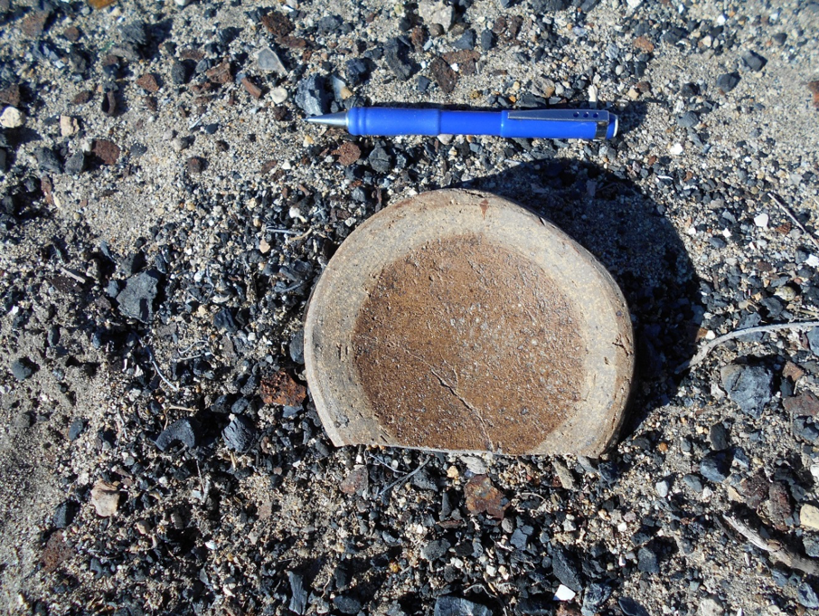
Notes
1 Throughout this paper, reference is made to both the Central Pacific Railroad and the (CPRR) Southern Pacific Transportation Company (SPTC). The CPRR was initially established in 1862 as the entity which was to construct the western portion of the Transcontinental Railroad per U.S. Government contracts. Over time, the CPRR constructed other railroad lines and became part of a larger holding company called the Southern Pacific Transportation Company (or just Southern Pacific Company) which was controlled by the owners of the original CPRR. Though the line from Sacramento to Ogden operated under the CPRR name for many years, it was operated as part of the SPTC system since the 1860s and remained that way until the CPRR (or Central Pacific Railway as it became known in 1899) was formally merged into the SPTC in 1959. Thus, when reference is made to either CPRR or SPTC, it is the same railroad.
2 See Arif Dirlick and Malcolm Yeung, Chinese on the American Frontier (Lanham, MD: Rowman & Littlefield, 2001) and William F. Chew, Nameless Builders of the Transcontinental (Victoria, BC: Trafford, 2004).
3 Scott Baxter and Rebecca Allen, “The View from Summit Camp,” Historical Archaeology 49, no. 1 (2015): 34-45; Michael R. Polk, “Interpreting Chinese Worker Camps on the Transcontinental Railroad at Promontory Summit, Utah,” Historical Archaeology 49, no. 1 (2015): 63−64.
4 Richard V. Francaviglia, Over the Range: A History of the Promontory Summit Route of the Pacific Railroad (Logan, Utah: Utah State University Press, 2008).
5 K. P. Cannon et al., The Archaeology of Chinese Railroad Workers in Utah: Results of Surveys in Box Elder and Emery Counties, USUAS Special Report No. 3, Utah Division of State History (Salt Lake City, 2016).
6 Anan S. Raymond and Richard E. Fike, Rails East to Promontory: The Utah Stations, Bureau of Land Management Cultural Resource Series No. 8.(1994 [original published in 1981]); Adrienne B. Anderson, Ancillary Construction on Promontory Summit, Utah: Those Domestic Structures Built by Railroad Workers (1983); Michael R. Polk, “Ethnic Chinese at Central Pacific Railroad Maintenance Camps,” paper presented at the Society for Historical Archaeology Conference on Historical and Underwater Archaeology, Seattle, January 6−11, 2015; “Chinese Railroad Workers at Central Pacific Stations Ca. 1870s-1880s”, paper presented at the Society for Historical Archaeology Conference on Historical and Underwater Archaeology, Washington, D.C., January 6-10, 2016; “Post-Construction Chinese Worker Housing on the Central Pacific Railroad:1870-1900”, paper presented at the Society for Historical Archaeology Conference on Historical and Underwater Archaeology, Fort Worth, Texas, January 4-8, 2017.
7 Carla Homstad, Janene Caywood, and Peggy Nelson, Cultural Landscape Report: Golden Spike National Historic Site, Box Elder County, Utah, Cultural Resources Selections No. 16, prepared for US National Park Service, Intermountain Region (Denver, 2000), 19.
8 James McCague, Moguls and Iron Men: The Story of the First Transcontinental Railroad (Harper and Row Publishers: New York, 1964), 117.
9 George Kraus, High Road to Promontory: Building the Central Pacific across the High Sierra (New York: Castle Books, 1969), 51−52.
10 Jean Pfaelzer, Driven Out: The Forgotten War against Chinese Americans (New York: Random House, 2007), 167.
11 George Kraus, “Chinese Laborers and the Construction of the Central Pacific,” Utah Historical Quarterly 37, no. 1 (1969), 41-57.
A graphic example of how important Chinese labor was after construction was completed can be seen in the 1870 Federal census record for Willard and Blue Creek Stations in Box Elder County, Utah. While most section stations along the Central Pacific portion of the transcontinental route maintained between 15 and 20 laborers (frequently Chinese men), in 1870, the census record for Willard records the number as 31 Chinese (and one Euro-American foreman) and at Blue Creek (at the eastern foot of the Promontory Mountains) as 58 Chinese workers (and 4 Euro-American foremen) (US Bureau of the Census 1870). The likely reason for the presence of this large number of laborers was that in December 1869, ownership of the stretch of the line from Promontory to just west of Ogden was transferred to CPRR from UPRR. Purchase of this portion of line had been agreed upon in June, suggesting that the UPRR probably did little maintenance and no upgrades to that portion of the line after its original construction by the UPRR. After December 1, 1869, CPRR likely found it necessary to undertake significant upgrades and maintenance in order to make the line serviceable for the large volume of transcontinental traffic that would occur until 1882, when more lines began to connect the eastern portion of the United States with the West Coast. Thus, such a need would require that the railroad station large crews at strategic points along that portion of the CPRR line, at least for as long as it took to upgrade the railroad. The fact that the Blue Creek station personnel dropped back to labor levels commensurate with other stations further west in the 1880 census, strongly confirms this supposition.
12 Charles Edgar Ames, Pioneering the Union Pacific: A Reappraisal of the Builders of the Railroad (New York: Appleton-Century-Crofts, 1969), 317-18.
13 Ibid, 371; US Pacific Railway Commission, Note on the Construction of the Central Pacific Railroad and Statement Showing the Terms Upon Which the Junction with the Union Pacific Railroad Was Fixed at Ogden, Exhibit No. 34, Statement No. 36 (Washington, DC: US Government Printing Office, 1887), 4748.
14 M. Klein, Union Pacific: The Birth of a Railroad, 1862−1893 (Garden City, NY: Doubleday, 1987), 237.
15 A. Dudley Gardner and David E. Johnson, Historic Assessment of the Railroad and Section Camp at Hampton, 48UT1520, Southwest Wyoming, prepared for Questar Pipeline Co. by Archaeological Services, Western Wyoming Community College (Rock Springs, 1991), 36.
16 For information on the lost 1890 census, please see “First in the Path of the Fireman: The Fate of the 1890 Population Census”, Genealogy Notes, 28(1). US Bureau of the Census, “1870 United States Federal Census,” National Archives and Records Administration (NARA) microfilm publication M593, 1,761 rolls, records of the US Bureau of the Census, Record Group 29, National Archives, Washington, DC, searchable at https://search.ancestry.com/search/db.aspx?dbid=7163; “1880 United States Federal Census,” NARA microfilm publication T9, 1,454 rolls, records of the US Bureau of the Census, Record Group 29, National Archives, Washington, DC, searchable at https://search.ancestry.com/search/db.aspx?dbid=6742; US Bureau of the Census, “1900 United States Federal Census,” NARA microfilm publication T623, 1,854 rolls, searchable at https://search.ancestry.com/search/db.aspx?dbid=7602; US Bureau of the Census, “1910 United States Federal Census,” NARA Microfilm publication T624, 1,178 rolls, records of the Bureau of Census, Record Group 29, National Archives, Washington, DC, searchable at https://search.ancestry.com/search/db.aspx?dbid=7884. All percentages, proportions, ages, and place of birth for these censuses were tabulated by the authors from a line-by-line transcription of the census records.
17 Andrew Gyory, Closing the Gate: Race, Politics, and the Chinese Exclusion Act (Chapel Hill: University of North Carolina Press, 1998), 254.
18 Christopher W. Merritt, Gary Weisz, and Kelly J. Dixon, “ ‘Verily the Road Was Built with Chinaman’s Bones’ ”: An Archaeology of Chinese Line Camps in Montana,” International Journal of Historical Archaeology 16, no. 4 (2012): 666−695; Alton King Briggs, 1974. “The Archeology of 1882 Labor Camps on the Southern Pacific Railroad, Val Verde County, Texas,” (master’s thesis, University of Texas at Austin, 1974).
19 A. Dudley Gardner, “The Chinese in Wyoming: Life in the Core and Peripheral Communities,” South Dakota History 33, no. 4 (2003): 382.
20 Donald Storm, “The Nevada Physical Facilities of Transcontinental, Central, and Southern Pacific Railroads,” Trainline 34 (1993): 21.
21 Gardner and Johnson, Historic Assessment of the Railroad and Section Camp at Hampton.
22 While the original census records have been burned for 1890, the Bureau of the Census did summarize the population numbers before their destruction, thus the figures for this year’s census are from the summary documents. US Bureau of the Census, Historical Statistics of the United States: Colonial Times to 1970, Part 1 (Washington, DC: US Department of Commerce, Government Printing Office, 1976), C228−295.
23 Rose Hum Lee, “Occupational Invasion, Succession, and Accommodation of the Chinese of Butte, Montana,” American Journal of Sociology, 55, no. 1 (1949): 50−58.
24 Christopher W. Merritt, “The Coming Man from Canton: Chinese Experience in Montana, 1862−1943” (PhD diss., University of Montana, Missoula, 2010).
25 Erika Lee, At America’s Gates: Chinese Immigration During the Exclusion Era (Chapel Hill: University of North Carolina Press, 2004), 7.
26 US Bureau of the Census, Abstract of the Eleventh Census: 1890 (Washington, DC: US Department of the Interior, Government Publishing Office 1894), 33.
27 Brigham City (UT) Bugler, December 15, 1894, 1.
28 The use of the name Central Pacific Railroad and Southern Pacific [Company] (never railroad) are generally interchangeable. The original name of the railroad company which constructed the western portion of the transcontinental railroad was the “Central Pacific Railroad” (CPRR), with its headquarters in Sacramento, and later San Francisco. This company was authorized to build the western portion of the transcontinental by Congress in 1862. The Southern Pacific Company was a holding company originally formed in the 1860s by the same individuals who owned the CPRR. In 1885 this company leased the CPRR. By the end of the 19th Century, the CPRR name was largely replaced by the Southern Pacific name, though technically the CPRR remained a corporate entity until 1959 when it was formally merged into the Southern Pacific.
29 “Old Timers Recall Frontier Railroading Days,” Southern Pacific Bulletin 11, no. 5 (1922): 6−8.
30 “Old Timers Recall Frontier Railroading Days,” 8; “S.P. Veterans to Hold Annual Reunion May 10,” Southern Pacific Bulletin 12, no. 5 (1923): 12.
31 Michael R. Polk, “Ethnic Chinese at Central Pacific Railroad Maintenance Camps,” paper presented at the Society for Historical Archaeology Conference on Historical and Underwater Archaeology, Seattle, January 6−11, 2015; Michael R. Polk, “Chinese Railroad Workers at Central Pacific Stations ca. 1870s−1880s,” paper presented at the Society for Historical Archaeology Conference on Historical and Underwater Archaeology, Washington, DC, January 6−10, 2016; Michael R. Polk, “Post-Construction Chinese Worker Housing on the Central Pacific Railroad: 1870-1900”, paper presented at the Society for Historical Archaeology Conference on Historical and Underwater Archaeology, Fort Worth, Texas, January 4-8, 2017.
32 Arthur Haig, “Central Pacific Railroad, Nevada and Utah Station Plan Book, ca. 1880s,” MS 79, Central Pacific Railroad Collection RG 3 Land Department Records, 1983, California State Railroad Museum Library, Sacramento. While a date of 1880 is assigned to the title of this manuscript, the contents of the book suggest that the material dates to the early to mid-1880s. The “author,” Arthur Haig, was the person who donated the manuscript to the Central Pacific Railroad Museum Library. The actual authorship of the many maps in the manuscript is probably the engineering department of the CPRR. It survived the fire of 1906 which destroyed most of the CPRR/Southern Pacific records and only became known when Arthur Haig donated the book to the California State Railroad Museum Library in 1983. How Mr. Haig may have been associated with the railroad and how he acquired the book is not known.
33 A. Dudley Gardner and Barbara Clarke, Final Report for the Aspen Section Camp 48UT660 (Rock Springs: Archaeological Services, Western Wyoming College, Prepared for Kemmerer Resource Area Office, Bureau of Land Management, Kemmerer, Wyoming, 2002); A. Dudley Gardner and Jennifer Ralston, Historic Assessment of the Monel Section Camp (Rock Springs: Archaeological Services, Western Wyoming College, Prepared for US Telecom, 1999).
34 Polk, Michael R. and Ann S. Polk, Chinese Railroad Worker Archaeology Along the Central Pacific Railroad’s Promontory Route (unpublished document, Aspen Ridge Consultants, Ogden, Utah, 2018); Cannon, Kenneth P., Houston L. Martin, Jonathan M. Peart, Molly Boeka Cannon, John Blong, Paul Santarone, Kathy Selma, Kassidy Price, and Chris Dunker, The Archaeology of Chinese Railroad Workers in Utah: Results of Surveys in Box Elder and Emery Counties (USU Archaeological Services, Inc., USUAS Special Report Number 3, Logan, Utah, 2016).
35 Cannon et al., Archaeology of Chinese Railroad Workers in Utah.
36 Raymond and Fike, “Rails East to Promontory”, 38.
37 Raymond and Fike, “Rails East to Promontory”, 36.
38 Raymond and Fike, “Rails East to Promontory”, 64.
39 Don C. Conley, 1976. “The Pioneer Chinese of Utah,” in The Peoples of Utah, ed. Helen Z. Papanikolas (Salt Lake City: Utah State Historical Society, 1976), 256.
40 Terry E. Boswell, “A Split Labor Market Analysis of Discrimination against Chinese Immigrants, 1850−1882,” American Sociological Review 51, no. 3 (1986): 352−371; Sucheng Chan, ed., 2005. Chinese American Transnationalism: Flow of People, Resources, and Ideas between China and America during the Exclusion Era (Philadelphia: Temple University Press, 2005); Pfaelzer, Driven Out.
41 US Bureau of the Census, “1910 United States Federal Census.”